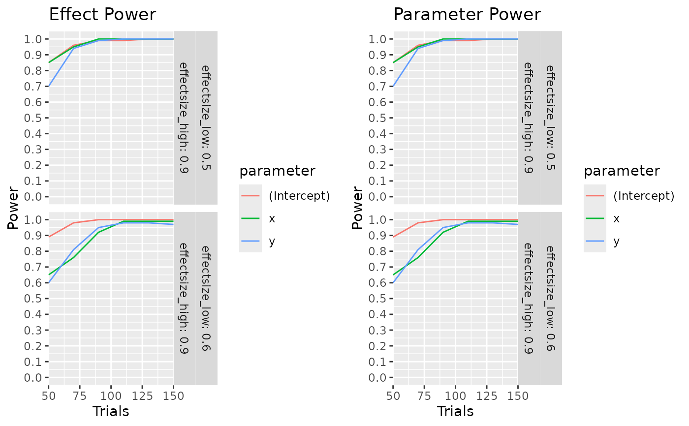

Gets the warnings and errors from `calculate_power_curves()` output.
Examples
#Generate sample
if(skpr:::run_documentation()) {
calculate_power_curves(trials=seq(50,150,by=20),
candidateset = expand.grid(x=c(-1,1),y=c(-1,1)),
model = ~.,
effectsize = list(c(0.5,0.9),c(0.6,0.9)),
eval_function = eval_design_mc,
eval_args = list(nsim = 100, glmfamily = "binomial"))
}

#> parameter type power trials effectsize_low effectsize_high
#> 1 (Intercept) effect.power.mc 0.85 50 0.5 0.9
#> 2 x effect.power.mc 0.85 50 0.5 0.9
#> 3 y effect.power.mc 0.70 50 0.5 0.9
#> 4 (Intercept) parameter.power.mc 0.85 50 0.5 0.9
#> 5 x parameter.power.mc 0.85 50 0.5 0.9
#> 6 y parameter.power.mc 0.70 50 0.5 0.9
#> 7 (Intercept) effect.power.mc 0.96 70 0.5 0.9
#> 8 x effect.power.mc 0.95 70 0.5 0.9
#> 9 y effect.power.mc 0.94 70 0.5 0.9
#> 10 (Intercept) parameter.power.mc 0.96 70 0.5 0.9
#> 11 x parameter.power.mc 0.95 70 0.5 0.9
#> 12 y parameter.power.mc 0.94 70 0.5 0.9
#> 13 (Intercept) effect.power.mc 0.99 90 0.5 0.9
#> 14 x effect.power.mc 1.00 90 0.5 0.9
#> 15 y effect.power.mc 0.99 90 0.5 0.9
#> 16 (Intercept) parameter.power.mc 0.99 90 0.5 0.9
#> 17 x parameter.power.mc 1.00 90 0.5 0.9
#> 18 y parameter.power.mc 0.99 90 0.5 0.9
#> 19 (Intercept) effect.power.mc 0.99 110 0.5 0.9
#> 20 x effect.power.mc 1.00 110 0.5 0.9
#> 21 y effect.power.mc 1.00 110 0.5 0.9
#> 22 (Intercept) parameter.power.mc 0.99 110 0.5 0.9
#> 23 x parameter.power.mc 1.00 110 0.5 0.9
#> 24 y parameter.power.mc 1.00 110 0.5 0.9
#> 25 (Intercept) effect.power.mc 1.00 130 0.5 0.9
#> 26 x effect.power.mc 1.00 130 0.5 0.9
#> 27 y effect.power.mc 1.00 130 0.5 0.9
#> 28 (Intercept) parameter.power.mc 1.00 130 0.5 0.9
#> 29 x parameter.power.mc 1.00 130 0.5 0.9
#> 30 y parameter.power.mc 1.00 130 0.5 0.9
#> 31 (Intercept) effect.power.mc 1.00 150 0.5 0.9
#> 32 x effect.power.mc 1.00 150 0.5 0.9
#> 33 y effect.power.mc 1.00 150 0.5 0.9
#> 34 (Intercept) parameter.power.mc 1.00 150 0.5 0.9
#> 35 x parameter.power.mc 1.00 150 0.5 0.9
#> 36 y parameter.power.mc 1.00 150 0.5 0.9
#> 37 (Intercept) effect.power.mc 0.89 50 0.6 0.9
#> 38 x effect.power.mc 0.65 50 0.6 0.9
#> 39 y effect.power.mc 0.60 50 0.6 0.9
#> 40 (Intercept) parameter.power.mc 0.89 50 0.6 0.9
#> 41 x parameter.power.mc 0.65 50 0.6 0.9
#> 42 y parameter.power.mc 0.60 50 0.6 0.9
#> 43 (Intercept) effect.power.mc 0.98 70 0.6 0.9
#> 44 x effect.power.mc 0.76 70 0.6 0.9
#> 45 y effect.power.mc 0.81 70 0.6 0.9
#> 46 (Intercept) parameter.power.mc 0.98 70 0.6 0.9
#> 47 x parameter.power.mc 0.76 70 0.6 0.9
#> 48 y parameter.power.mc 0.81 70 0.6 0.9
#> 49 (Intercept) effect.power.mc 1.00 90 0.6 0.9
#> 50 x effect.power.mc 0.92 90 0.6 0.9
#> 51 y effect.power.mc 0.95 90 0.6 0.9
#> 52 (Intercept) parameter.power.mc 1.00 90 0.6 0.9
#> 53 x parameter.power.mc 0.92 90 0.6 0.9
#> 54 y parameter.power.mc 0.95 90 0.6 0.9
#> 55 (Intercept) effect.power.mc 1.00 110 0.6 0.9
#> 56 x effect.power.mc 0.99 110 0.6 0.9
#> 57 y effect.power.mc 0.98 110 0.6 0.9
#> 58 (Intercept) parameter.power.mc 1.00 110 0.6 0.9
#> 59 x parameter.power.mc 0.99 110 0.6 0.9
#> 60 y parameter.power.mc 0.98 110 0.6 0.9
#> 61 (Intercept) effect.power.mc 1.00 130 0.6 0.9
#> 62 x effect.power.mc 0.99 130 0.6 0.9
#> 63 y effect.power.mc 0.98 130 0.6 0.9
#> 64 (Intercept) parameter.power.mc 1.00 130 0.6 0.9
#> 65 x parameter.power.mc 0.99 130 0.6 0.9
#> 66 y parameter.power.mc 0.98 130 0.6 0.9
#> 67 (Intercept) effect.power.mc 1.00 150 0.6 0.9
#> 68 x effect.power.mc 0.99 150 0.6 0.9
#> 69 y effect.power.mc 0.97 150 0.6 0.9
#> 70 (Intercept) parameter.power.mc 1.00 150 0.6 0.9
#> 71 x parameter.power.mc 0.99 150 0.6 0.9
#> 72 y parameter.power.mc 0.97 150 0.6 0.9
#> random_seed
#> 1 123
#> 2 123
#> 3 123
#> 4 123
#> 5 123
#> 6 123
#> 7 123
#> 8 123
#> 9 123
#> 10 123
#> 11 123
#> 12 123
#> 13 123
#> 14 123
#> 15 123
#> 16 123
#> 17 123
#> 18 123
#> 19 123
#> 20 123
#> 21 123
#> 22 123
#> 23 123
#> 24 123
#> 25 123
#> 26 123
#> 27 123
#> 28 123
#> 29 123
#> 30 123
#> 31 123
#> 32 123
#> 33 123
#> 34 123
#> 35 123
#> 36 123
#> 37 123
#> 38 123
#> 39 123
#> 40 123
#> 41 123
#> 42 123
#> 43 123
#> 44 123
#> 45 123
#> 46 123
#> 47 123
#> 48 123
#> 49 123
#> 50 123
#> 51 123
#> 52 123
#> 53 123
#> 54 123
#> 55 123
#> 56 123
#> 57 123
#> 58 123
#> 59 123
#> 60 123
#> 61 123
#> 62 123
#> 63 123
#> 64 123
#> 65 123
#> 66 123
#> 67 123
#> 68 123
#> 69 123
#> 70 123
#> 71 123
#> 72 123
#> Power curve generation captured the following warning/error messages:
#> Function | Type | N | Message
#> Evaluation | Warn | 1 | Message: 'skpr: Partial or complete separation likely detected in the binomial Monte Carlo simulation. Increase the number of runs in the design or decrease the number of model parameters to improve power.'